CFD Course Project — Politecnico di Bari · A.Y. 2024–2025
CFD Solver for Shock Wave Analysis — Roe & Steger–Warming Schemes
Fortran 77 shock-tube solver for the 1D Euler equations: validation of the Roe-based code against Toro's reference solutions and implementation of a Steger–Warming flux-splitting scheme.
Source code: github.com/michelemaiullari/cfd-projects · shock-solver
Overview
As the year project of the Computational Fluid Dynamics course at Politecnico di Bari, the evolution of an airflow inside a shock tube was analysed — the classical Riemann problem for the one-dimensional Euler equations of a gamma-law gas, in which two states at different pressure and density are initially separated by a discontinuity. The project was built around an existing Fortran 77 code, nozzle_w.f, based on Roe's approximate Riemann solver, with a twofold objective: first verify the correctness of the code, then extend it with a second, independent numerical scheme.
The work therefore split into two parts: validating the Roe-based solver against the reference solutions of Toro's Riemann Solvers and Numerical Methods for Fluid Dynamics (Springer), and implementing the Steger–Warming flux vector splitting method within the same code, comparing the two schemes in terms of accuracy, robustness and behaviour on strong shocks, rarefactions and contact discontinuities.
Approach
- Verified the existing Roe-based solver on five standard Riemann problems from Toro's textbook: a shock tube case (Test 1), two interacting rarefactions (Test 2), a blast-wave-strength case with a pressure ratio of 105 (Test 3), a nearly stationary contact discontinuity (Test 4) and a colliding-flow case (Test 5), running each test with its reference shock position and output time.
- Achieved second-order accuracy through MUSCL reconstruction with slope limiters (van Albada active, minmod available, MUSCL coefficient κ = −1), two-stage Runge–Kutta time integration, and an entropy fix preventing non-physical expansion shocks in the Roe scheme; the time step was constrained by the CFL condition (CFL = 0.9).
- Handled the full code infrastructure: quasi-1D nozzle formulation with geometric source terms, reflective wall boundary conditions, and per-test selection of the initial discontinuity position.
- Implemented the Steger–Warming method in the 1D case: flux vector splitting based on the homogeneity property of the Euler flux F(U) = A(U)U, with eigenvalue splitting λi± = (λi ± |λi|)/2 and split fluxes F± = A±U assembled at each cell interface.
-
Worked with GNU Fortran 13.3 on WSL2, Visual Studio Code and
gnuplot for post-processing; compiled in double precision
(gfortran
-fdefault-real-8) to remove single-precision round-off that triggered spurious negative-pressure aborts.
Numerical Methods
The shock tube is governed by the Riemann problem: a hyperbolic system of conservation laws with piecewise-constant initial data, a left state UL and a right state UR separated by a discontinuity. The solution consists of waves propagating from the initial discontinuity — shocks, rarefaction fans and contact discontinuities — and is known in exact form for the Euler equations, which makes the shock tube the ideal benchmark for numerical schemes.
The Roe solver linearises the problem at each cell interface through the Roe matrix, which satisfies hyperbolicity, consistency and conservation properties, so that the jump between the two states is decomposed into characteristic waves with their strengths; the intercell flux is then built from the upwind wave contributions. Since the linearised solution can produce non-physical expansion shocks, an entropy fix is applied across rarefactions.
The Steger–Warming method belongs instead to the flux vector splitting family: exploiting the homogeneity of the Euler flux, the flux vector is split into two contributions with non-negative and non-positive eigenvalue spectra, each upwinded according to the direction along which information propagates. FVS schemes are simpler and cheaper than Godunov-type solvers, at the price of a lower resolution of contact discontinuities and shear waves.
Running both schemes within the same code, on the same grid and the same test set, isolated the effect of the flux function on accuracy and robustness.
Results
- Verified the Roe-based code: density, velocity and pressure profiles overlapped the reference solutions reported in Toro's book for Tests 1, 3, 4 and 5.
- Test 2 (two rarefactions) could not be completed with the Roe implementation: the run consistently aborted with negative pressure values.
- Validated the implemented Steger–Warming scheme: profiles overlapped the literature results for Tests 1, 3 and 4, confirming models, initial hypotheses and implementation.
- Test 2 returned negative pressures also with the Steger–Warming scheme, even with very conservative settings (coarse grid, low CFL).
- Test 5 required extremely conservative settings (coarse grid, CFL far below 1, approximate boundary conditions) to remain stable: trends match the reference behaviour, but the added numerical dissipation limits the overlap.
- Closed the comparison between two independent upwind families — approximate Riemann solvers and flux vector splitting — within a single, reproducible Fortran framework.
Skills
Gallery
Numerical results organised as in the project report: for every test the code outputs the density, velocity and pressure profiles along the tube axis (gnuplot post-processing). Test 2 (two interacting rarefactions) is not shown — both solvers abort with negative pressure values, see Results.
Part 1 — Validation of the original code (Roe solver)
Test 1 — Shock tube
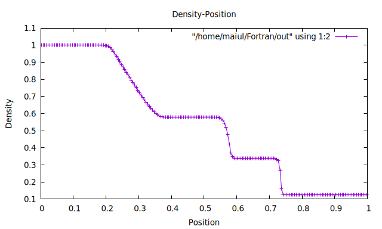
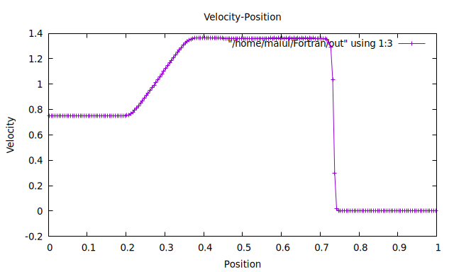
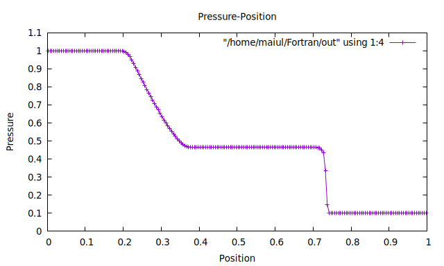
Test 3 — Blast-wave problem
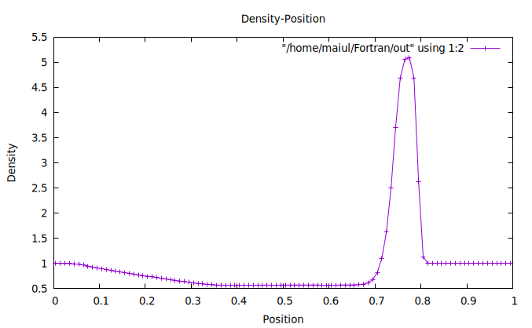
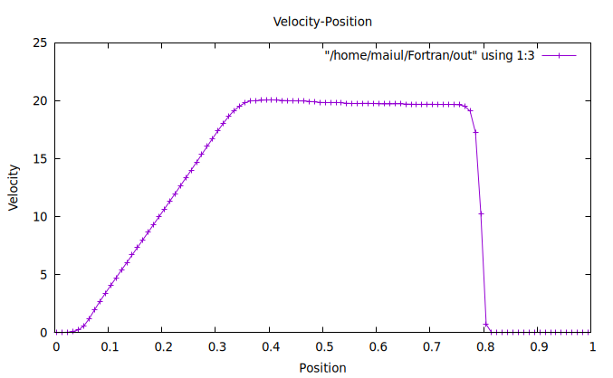
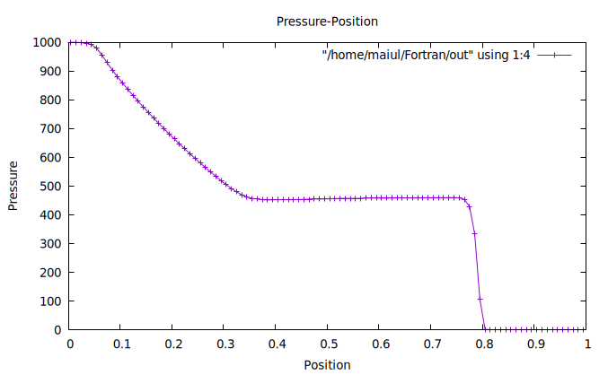
Test 4 — Nearly stationary contact
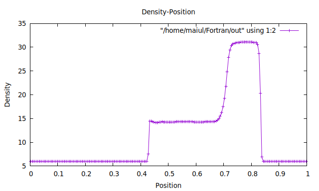
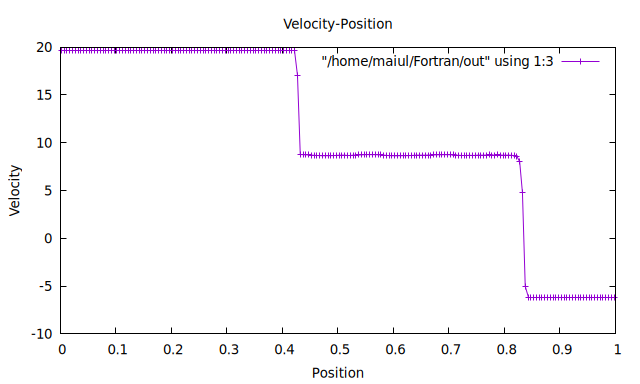

Test 5 — Colliding flows
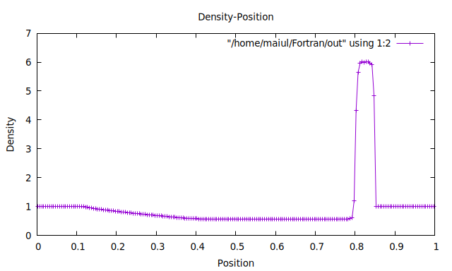
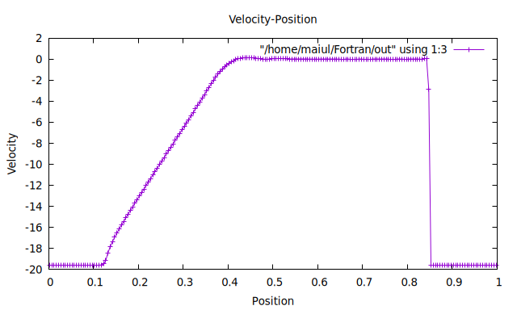
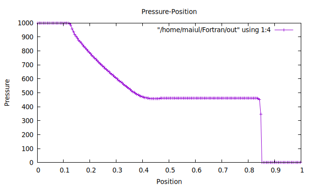
Part 2 — With the Steger–Warming implementation
Test 1 — Shock tube
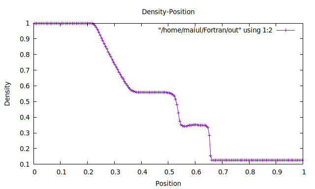
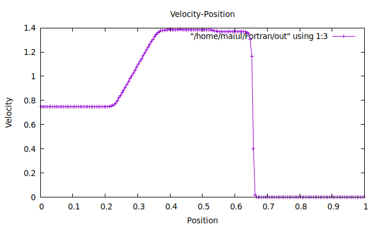
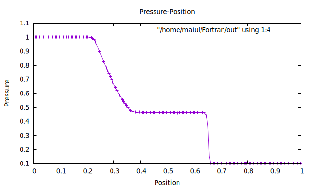
Test 3 — Blast-wave problem
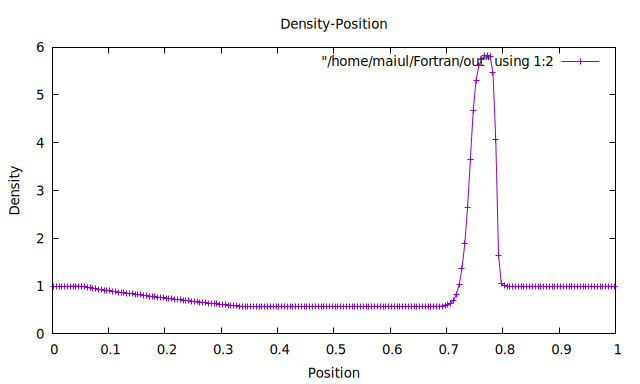
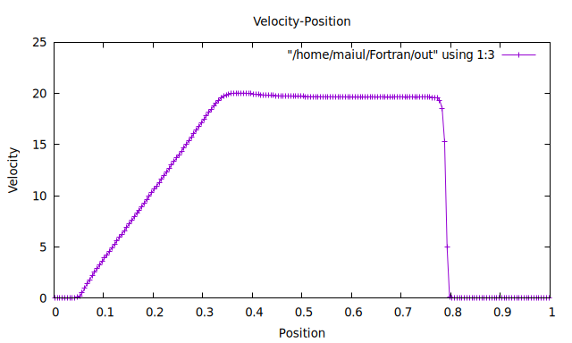
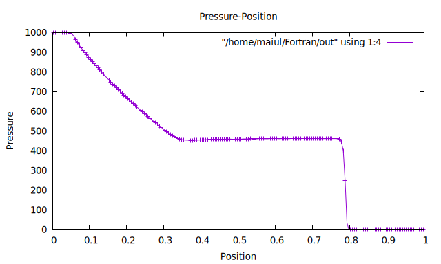
Test 4 — Nearly stationary contact


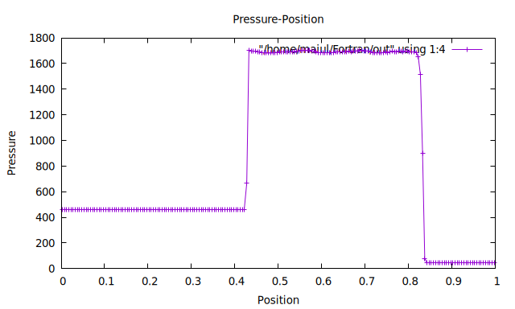
Test 5 — Colliding flows
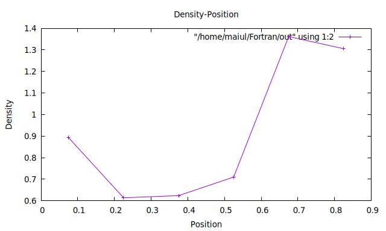
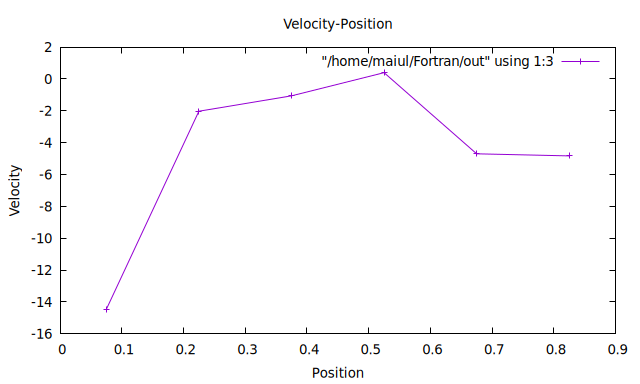
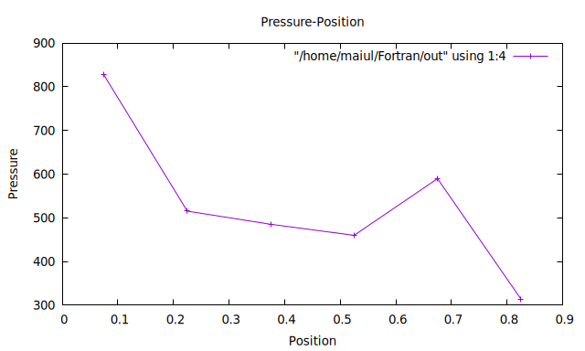